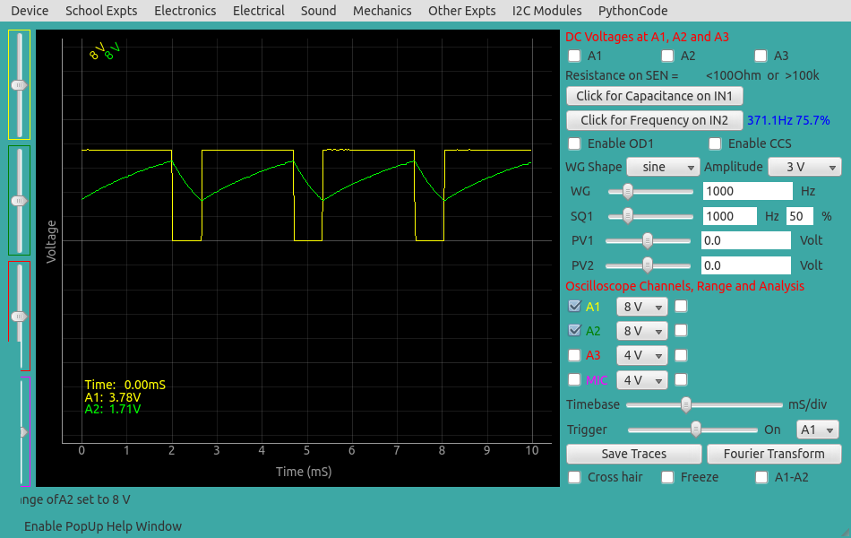

IC555 Astable Multi-vibrator
The schematic is wired as shown in the diagram below. The output of 555
is monitored on channel A1, and also connected to IN2 for frequency and
duty cycle measurement. The 5 volt power can be taken from the +5V socket
or from OD1 (need to enable OD1). The charging waveform may be monitored
on A2. The capacitor from pin5 to ground is for noise reduction.
|
 |
| Wiring Diagram |
Photograph of the experimental setup |
We have used R1 = 2.2K, R2 = 1K, C = 1uF . The calculated frequency
and duty cycle are 343.6 Hz and 76.2%.
The measured values are shown in the figure below.

|
| Screen shot of the oscilloscope program showing the IC555 output.
The voltage across the capacitor is shown on A2. |